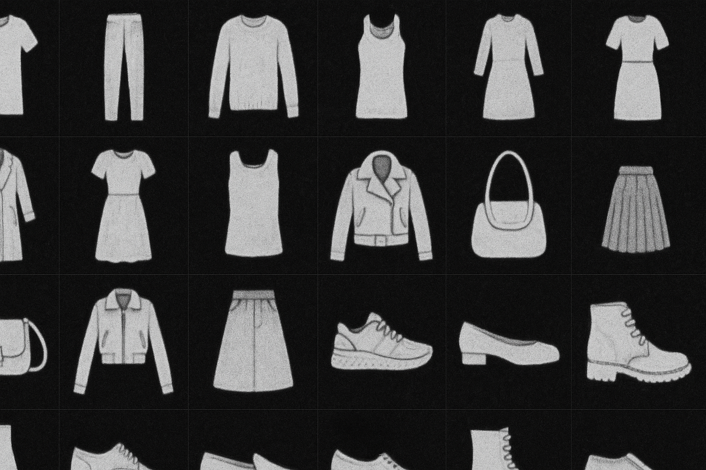

Occupational Medicine Platform
2025
VLMOCRLLM
Multi-AgentCorrective RAG
Hybrid RAGBM25SPLADE
Cross-EncoderHNSWFAISS
LangChainLangGraph
SVMXGBoostMLP
Decision TreesRandom Forest
DjangoFastAPICelery
PostgreSQLDocker
Web ScrappingBeautiful SoupSelenium
Gamification
I built an end-to-end occupational-health platform that turns messy clinic inputs into a structured, clinician-ready report. Employees and physicians submit digital forms and lab PDFs; a VLM+OCR module (Beagle-14B) extracts biomarkers and normalizes them to JSON, which an orchestrator LLM routes to task-specific predictors (SVM, XGBoost, MLP) for risks such as hypertension, diabetes, CVD, and anemia.
The system includes a dedicated retrieval stack: a hybrid retriever (BM25 + SPLADE) provides initial candidates, a Cross-Encoder reranker refines relevance, and an HNSW index enables fast similarity search over clinical documents and pharmacology notes.
These retrieval outputs feed two cooperating agents—one maps conditions to specialties and crawls verified physician directories to surface nearby, insurance-compatible referrals; the other consults a curated pharmacology knowledge base and checks online/local availability.
Finally, a reporter agent uses corrective RAG over the FAISS store plus just-in-time web context to generate an evidence-backed report that explains findings, flags thresholds, and recommends next steps. The system runs on Django (RBAC, PostgreSQL) and FastAPI services, with Celery/Redis for async pipelines and Docker for reproducible deployment—designed for accuracy, traceability, and scalable clinic operations.

ROP Diagnostic Web App
2024
U-Net++EfficientNet-B6EfficientNet-B4
SegmentationClassification
Agent-based RAGHybrid RAG
Information Retrieval
Llama-3 (Local)FAISS
MAPnDCG
Explainable AI
Decision Layer
DjangoFastAPI
PostgreSQLDocker
I built a two-stage AI platform for ROP screening that combines deep vision models with knowledge-grounded clinical explanations. Fundus images are processed by a U-Net++ vessel segmentation network (ResNet-18 encoder) followed by three CNN heads: EfficientNet-B4 for Plus disease, EfficientNet-B6 for a 7-class stage classifier, and EfficientNet-B4 for zone estimation. The outputs feed a rule-based decision layer that maps findings to observation or treatment bands.
On top of this, an agent-based RAG workflow combines hybrid retrieval over a curated ophthalmology corpus in FAISS with search-indexed guideline data, allowing a local Llama 3 model (served via Ollama) to generate cited, transparent clinical explanations. Retrieval behaviour is evaluated using standard IR metrics such as MAP and nDCG to monitor and improve the quality of the generated evidence and recommendations.
The system runs on a modular Django + FastAPI backend with PostgreSQL and Docker, designed for accuracy, interpretability, and practical clinical deployment.
SurgiNote — Cataract Surgery Training Assistant
2025
Hackathon: Sharif LLM Agents
WhisperTTS
LLMRAGAgents
LangChainSeleniumBeautiful Soup
We developed an AI assistant that automates and enhances feedback in cataract surgery training. In traditional workflows, mentors must manually review and comment on residents’ surgery videos, which is time-consuming and inconsistent. SurgiNote streamlines this process by allowing instructors to leave timestamped voice feedback while watching the video. The system uses Whisper ASR to transcribe the audio and a lightweight LLM refinement (GPT-4o-mini) to correct domain-specific typos without altering meaning. Each comment is synchronized with its video segment using synthetic TTS anchor cues, ensuring precise localization. The cleaned transcript is then analyzed by two coordinated agents: a RAG-based agent that retrieves explanations and reading material from ophthalmology references, and a search agent that finds relevant surgical videos from CataractCoach. A reporting LLM merges these results into a structured feedback document that highlights weaknesses, cites textbook sections, and links corrective videos.

Speech-Driven Motor Control
2025
WhisperLLMIntent Recognition
Rule-Based ParsingNatural Language Processing
FastAPIPythonSerial Communication
ArduinoEmbedded Control
Speech RecognitionREST API
Asynchronous BackendDocker
I developed a bilingual voice-to-action system that translates natural-language commands into real-time motor control. The pipeline converts spoken or typed English and Persian inputs using Whisper ASR, then parses intent through an optional LLM (GPT-4o-mini) with a rule-based fallback for offline reliability. Commands such as “increase 10%” or “set to 3000” are normalized, resolved mathematically, and clamped to safe RPM limits before being transmitted over serial to an Arduino. The microcontroller executes feedback-driven PWM control with live RPM display on a Nokia 5110 LCD. Built with FastAPI, Python, and an embedded C++ firmware loop, the system demonstrates tight integration between speech processing, language understanding, and low-level hardware control for accessible, voice-driven mechatronics.

Sparse vs. Dense Retrieval on SciFact
2025
RAGBM25FAISS
Sentence-TransformersBEIR
Python
A head-to-head study of BM25 (sparse) versus Sentence-Transformers + FAISS (dense) on BEIR’s SciFact.
I tuned BM25 with a small grid search and found the best configuration at k1 = 0.95 and b = 0.95.
On this setup, BM25 delivered stronger ranking quality (NDCG and MAP), while the dense retriever provided broader coverage
(higher Recall@100) and slightly better P@k. The results reflect the dataset’s nature: scientific claims reward exact lexical cues
that BM25 captures well, whereas dense embeddings expand semantic matches—useful when a reranker follows.
The project ships reproducible scripts for indexing, retrieval, and BEIR-style evaluation with clean CLI entry points.
SMS Spam Detector
2025
NLPPythonscikit-learnNLTK
TF-IDFNaive BayesRandom Forest
A compact NLP pipeline that classifies text messages as spam or ham with tidy preprocessing, TF-IDF features, and a mix of classic models. The flow cleans and normalizes messages, builds a lightweight vocabulary, and layers in a few simple cues (like length and digit/currency presence) to improve separability. I used a fast Multinomial Naive Bayes as a baseline and compared it with tree-based ensembles, then validated results with cross-validation and confusion-matrix diagnostics. The project ships with a small CLI so you can paste any SMS and immediately get a prediction, making it easy to drop into a messaging backend or a simple app.
Hand Gesture Recognition
2025
MediaPipeTensorFlowKeras
LSTMGRUMLP
TFLiteGesture RecognitionReal-Time Inference
OpenCVPythonRaspberry Pi
GPIOVLC IntegrationDBus/MPRIS
I designed a lightweight, real-time hand-gesture recognition system that enables both media and hardware control without heavy convolutional models. Using MediaPipe Hands to extract 63-dimensional landmark features, the pipeline trains compact temporal networks (LSTM, GRU, RNN, MLP) that automatically select the best architecture based on validation accuracy. The trained model is exported to TensorFlow Lite for on-device inference across two runtimes: (A) a Linux-based VLC controller that maps gestures to play, pause, seek, and volume actions via DBus/MPRIS, and (B) a Raspberry Pi application that controls five LEDs using debounced GPIO signals. The system achieves robust real-time performance and is optimized for portability, low compute cost, and responsiveness in embedded and desktop environments.
VideoFair — Segmentation Streaming
2024
YOLOv8Computer VisionSegmentation
OpenCVFFmpegHLS Streaming
DjangoCeleryRedis
Asynchronous ProcessingDockerVideo AI
I developed a video segmentation and streaming platform that performs selective YOLOv8 inference on trimmed time windows and delivers real-time playback via HTTP Live Streaming (HLS). Users upload and segment videos through a Django-based web interface, while asynchronous Celery workers handle heavy GPU tasks for object segmentation, frame overlay rendering, and FFmpeg-based HLS conversion. The modular backend allows easy swapping of weights, codecs, or models and ensures efficient distributed processing. This project demonstrates scalable video AI integration with practical deployment pipelines for multimedia analytics and streaming.

Fashion-MNIST Classifier
2025
PyTorchCNNMLP
AdamWOneCycleLR
Stratified SplitMacro-F1
AugmentationConfusion Matrix
A clean PyTorch pipeline for Fashion-MNIST with stratified 80/10/10 splits and train-only normalization to avoid leakage.
Includes configurable MLP and CNN baselines, label smoothing, BatchNorm/Dropout, gradient clipping, and AdamW + OneCycleLR.
Early stopping monitors validation Macro-F1, and rich diagnostics (confusion matrices, per-class precision/recall/F1,
learning curves, misclassifications, and confidence distributions) make model behavior easy to analyze and iterate.
IBAN Converter & Validator (Iran)
2022
DjangoPython
IBAN (Sheba)Mod-97
BBAN RulesRegex
Server-Rendered Forms
A lightweight Django web app that converts Iranian bank account numbers to IBAN (Sheba) and back, with full validation.
The core Ibanist engine normalizes inputs, maps bank prefixes, and applies bank-specific BBAN formatting for major banks
(Keshavarzi, Tejarat, Refah, Saderat, Parsian, Mehr Iran, Meli, Melat, Sepah). It computes ISO-13616 check digits using the standard
mod-97 procedure and rejects malformed inputs by returning explicit invalid fields. Views support both
“account → IBAN” and “IBAN → account” flows, with simple templates (including per-bank pages) for a clean UX.
The implementation favors clarity and reliability: input sanitization, deterministic parsing/building, and consistent outputs for
iban, bank, and an (account number).
Modern Control — Ball & Beam
2025
MATLABSimulink
State-Space ControlPole Placement
Full-State FeedbackIntegral Control
Luenberger ObserverReduced-Order Observer
ControllabilityObservability
Nonlinear SimulationModern Control Theory
I designed and implemented a complete observer-based control system for the classical Ball & Beam experiment using MATLAB and Simulink. Starting from the nonlinear Lagrangian model, I derived and validated the system’s dynamics through both analytical ODEs and Simulink simulations. The model was linearized around its equilibrium, and controllability and observability were verified using rank, PBH, and Jordan tests. A full state-feedback controller was then designed via pole placement to meet time-domain performance criteria (settling time < 3 s, overshoot < 5%), followed by the inclusion of a reference pre-compensator and an integral controller to eliminate steady-state error. Finally, a reduced-order Luenberger observer was designed to estimate unmeasured states, and the integrated observer–controller was tested on the nonlinear system. The final closed-loop system achieved stable, precise tracking and validated the Separation Principle in practice.
Linear Control — Final Project
2024
MATLABFrequency Response
BodeNyquistRoot Locus
Routh–HurwitzPID Design
Lead–Lag CompensationControl Theory
This project applied classical control techniques to design and analyze controllers for a given frequency-response system.
The workflow involved identifying the system’s type, order, and delay from frequency data and fitting an appropriate transfer function.
Stability and performance were evaluated using Routh–Hurwitz, Bode, Nyquist, and root-locus methods.
P, PI, PD, and lead–lag controllers were designed and tuned to meet overshoot, settling time, and steady-state error targets.
MATLAB simulations compared the controlled and open-loop responses, verifying that the final closed-loop system achieved all transient and steady-state performance criteria.